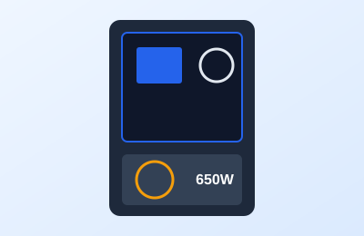

Tema 5 de 5
La fuente de poder y la caja: energía y orden

Descripción
La fuente de poder entrega la energía a cada componente. Debe tener más potencia de la que tu equipo consume para trabajar con holgura y no recalentarse. La certificación 80 Plus indica qué tan eficiente es.
La caja protege los componentes y facilita el flujo de aire. Antes de comprarla confirma que tu placa madre y tu tarjeta de video quepan, y que tenga ventiladores o espacio para instalarlos.
Datos clave
- Potencia: calcula el consumo total y suma un 20 % de margen.
- Certificación 80 Plus: mayor eficiencia y menos calor.
- Caja: verifica tamaño de la placa y largo de la tarjeta de video.
Cómo se instala
- Instala la fuente en su compartimento inferior.
- Conecta los cables a la placa madre, la GPU y los discos.
- Ordena los cables y cierra la caja.